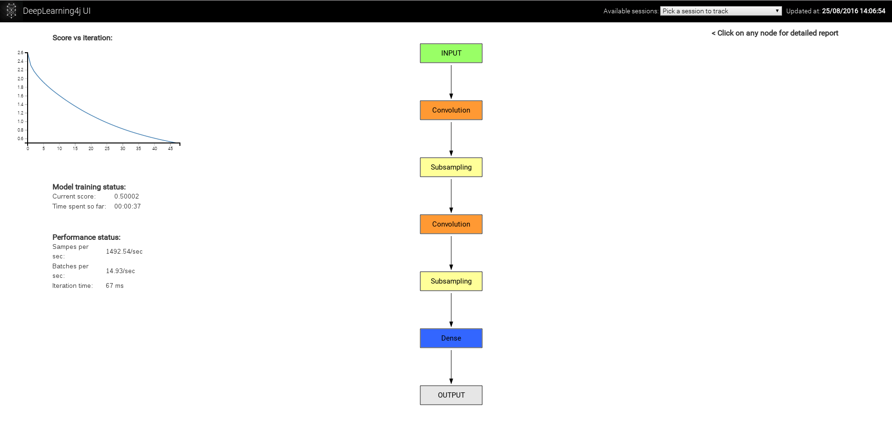

Deeplearning4j可以利用Spark在多个GPU上开展分布式的深度神经网络训练。本页将具体介绍如何使用Spark加载数据，以及如何用cuDNN进行基于GPU的图像处理。
Deeplearning4j提供的多种库可实现神经网络自动调试、神经网络模型部署、可视化以及与其他数据加工管道工具的集成，大幅简化基于生产集群的数据处理。
本页将依次简要介绍这些技术，具体定义将在下文中给出。在分别介绍各项技术之后，文章最后将用一个图像处理的代码示例来说明Deeplearning4j如何将这些技术结合起来。
本页将介绍下列各项技术及其之间的互动关系：
作为一种开源的分布式运行时，Spark可以安排多个主机线程。它是Apache软件基金会去年最受欢迎的项目。Deeplearning4j仅把Spark作为集群的数据访问层，因为我们的计算需求很大，而Spark目前无法完全满足我们的速度和容量需求 。Spark基本上就是Hadoop生态系统（HDFS或Hadoop文件系统）的快速ETL（提取、转换、加载）或数据存储与访问工具。我们的目的是利用Hadoop的数据本地化机制，用本地计算来加快计算速度。
Spark采用名为分布式弹性数据集（RDD）的构造来实现这种设计。RDD为处理集群上各个分区的数据提供了函数接口。下文将演示如何用RDD加载数据，以及如何遍历Dataset（包含一个特征矩阵和一个标签矩阵的DL4J构造）的RDD。
cuDNN的全称是CUDA深度神经网络库，由GPU制造商NVIDIA推出。cuDNN是用于实现正向和反向卷积、池化、标准化以及激活层等标准深度学习例程的基元库。
对于深度卷积网络（以及近来的循环网络）而言，cuDNN是速度最快的库之一。在Facebook的Soumith Chintala开展的图像处理基准测试中，cuDNN名列前茅。Deeplearning4j用Java本地接口包装cuDNN，方便Java用户使用。
Deeplearning4j是应用最广泛的JVM开源深度学习工具，面向Java、Scala和Clojure用户群。它旨在将深度学习引入生产栈，与Hadoop与Spark等主流大数据框架紧密集成。DL4J能处理图像、文本、时间序列和声音等所有主要数据类型，提供的算法包括卷积网络、LSTM等循环网络、Word2Vec和Doc2Vec等NLP工具以及各类自动编码器。
Deeplearning4j是用于在Java虚拟机上构建深度学习应用的系列开源库之一。它也是由Skymind工程团队负责维护的几个开源库之一。
Deeplearning4j自带内置Spark集成，用于处理在集群上开展的分布式神经网络训练。我们采用数据并行（说明见下文）来将网络训练向外扩展至多台计算机，每个节点靠一个（或四个）GPU运行。我们用Spark访问数据。具体方法是在Spark RDD分区（存储于集群各处的不同数据部分）上进行训练。
我们将分布式文件系统与简单易用的接口相结合，让计算能到数据所在地点进行，而不是将数据转移至计算地点，如此我们既能以便于设置的方式开展分布式训练，又不需要自己从事大量较为困难的工作。
通常会。但是，我们会通过在堆外进行运算来优化通信。JavaCPP用Pointer类来实现简便易行的堆外运算（即数据不会进入垃圾回收器）。如此一来，我们将因为延迟及内存管理负担降低而获益；同时垃圾回收器会得到控制，其运行会更有针对性，而这也将带来益处。Apache Flink、Spark和Hbase等许多分布式系统框架和数据库都采用了这种方法。
Java不擅长线性代数运算。线性代数运算应当由C++来处理，如此便可以充分利用浮点运算的硬件加速。这也正是libnd4j的用途。
分布式神经网络训练的开展方法有两种：数据并行和模型并行。
数据并行指将一个非常大的数据集细分为多个批次，然后把这些批次分发给在不同硬件上并行运行的模型，同时进行训练。
试想用一套百科全书来训练：每10页分为一批，将10个批次分发给10个模型进行训练，然后把训练得到的模型参数平均化，形成一个主模型，再将更新后的主模型权重推送至各个分布式模型。训练结束时，将所有的模型参数平均化，产生一个最终模型。
Deeplearning4j主要依靠数据并行模式，利用Spark来安排集群中的分布式主机线程。
示意图如下：

请参阅本页底部参考资料列表中的论文。
以下是在Spark上用GPU运行LeNet的Deeplearning4j代码示例。
首先配置Spark并加载数据：
public static void main(String[] args) throws Exception {
//创建spark上下文，将数据载入内存
SparkConf sparkConf = new SparkConf();
sparkConf.setMaster("local[*]");
sparkConf.setAppName("MNIST");
JavaSparkContext sc = new JavaSparkContext(sparkConf);
int examplesPerDataSetObject = 32;
DataSetIterator mnistTrain = new MnistDataSetIterator(32, true, 12345);
DataSetIterator mnistTest = new MnistDataSetIterator(32, false, 12345);
List<DataSet> trainData = new ArrayList<>();
List<DataSet> testData = new ArrayList<>();
while(mnistTrain.hasNext()) trainData.add(mnistTrain.next());
Collections.shuffle(trainData,new Random(12345));
while(mnistTest.hasNext()) testData.add(mnistTest.next());
//获取训练数据。注意不建议对实际问题使用parallelize
JavaRDD<DataSet> train = sc.parallelize(trainData);
JavaRDD<DataSet> test = sc.parallelize(testData);
然后配置神经网络：
//设置网络配置（按标准的DL4J网络配置）
int nChannels = 1;
int outputNum = 10;
int iterations = 1;
int seed = 123;
log.info("Build model....");
MultiLayerConfiguration.Builder builder = new NeuralNetConfiguration.Builder()
.seed(seed)
.iterations(iterations)
.regularization(true).l2(0.0005)
.learningRate(0.1)
.optimizationAlgo(OptimizationAlgorithm.STOCHASTIC_GRADIENT_DESCENT)
.updater(Updater.ADAGRAD)
.list()
.layer(0, new ConvolutionLayer.Builder(5, 5)
.nIn(nChannels)
.stride(1, 1)
.nOut(20)
.weightInit(WeightInit.XAVIER)
.activation("relu")
.build())
.layer(1, new SubsamplingLayer.Builder(SubsamplingLayer.PoolingType.MAX)
.kernelSize(2, 2)
.build())
.layer(2, new ConvolutionLayer.Builder(5, 5)
.nIn(20)
.nOut(50)
.stride(2,2)
.weightInit(WeightInit.XAVIER)
.activation("relu")
.build())
.layer(3, new SubsamplingLayer.Builder(SubsamplingLayer.PoolingType.MAX)
.kernelSize(2, 2)
.build())
.layer(4, new DenseLayer.Builder().activation("relu")
.weightInit(WeightInit.XAVIER)
.nOut(200).build())
.layer(5, new OutputLayer.Builder(LossFunctions.LossFunction.NEGATIVELOGLIKELIHOOD)
.nOut(outputNum)
.weightInit(WeightInit.XAVIER)
.activation("softmax")
.build())
.backprop(true).pretrain(false);
new ConvolutionLayerSetup(builder,28,28,1);
MultiLayerConfiguration conf = builder.build();
MultiLayerNetwork net = new MultiLayerNetwork(conf);
net.init();
以下是上述神经网络的示意图：
熟悉其他框架的用户也可以使用我们的另一个更复杂（但功能更多）的计算图API。
另外，请注意此处使用的builder（构建器）模式。Java没有关键字参数，流式builder模式是Java语言中的最佳实践，因为IntelliJ等配套工具可用于处理代码完成。虽然它有些冗长，但可以用Clojure或Scala等更简洁的语言将其包装起来，而这种操作也很简单。
我们将会发布一项与Keras框架非常相似的Scala包装，利用Scala语言中一些更优越的构造，这样应当会大大提升可用性。
上述配置也可以通过YAML或JSON来指定。
然后，我们为Spark指定参数平均化的运行方式：
//按配置建立Spark多层网络
ParameterAveragingTrainingMaster tm = new ParameterAveragingTrainingMaster.Builder(examplesPerDataSetObject)
.workerPrefetchNumBatches(0)
.saveUpdater(true) //保存adagrad的梯度平方等历史记录
.averagingFrequency(5) //每个工作器进行5个微批次的训练操作，然后将参数平均化并重新分发
.batchSizePerWorker(examplesPerDataSetObject) //每个工作器每次训练操作时使用的样例数
.build();
SparkDl4jMultiLayer sparkNetwork = new SparkDl4jMultiLayer(sc, net, tm);
最后，我们对sparkNetwork调用.fit()，训练网络。
//训练网络
log.info("--- Starting network training ---");
int nEpochs = 5;
for( int i = 0; i < nEpochs; i++ ){
sparkNetwork.fit(train);
System.out.println("----- Epoch " + i + " complete -----");
//用Spark进行评估：
Evaluation evaluation = sparkNetwork.evaluate(test);
System.out.println(evaluation.stats());
}
最后，如果您希望进一步探索：
在用基于Spark的分布式GPU框架训练深度神经网络之前，您需要做两件准备工作。
如果您希望直接与我们讨论，请在Gitter上加入我们： https://gitter.im/deeplearning4j/deeplearning4j
在装有Ubuntu 16.04的计算机上的YARN集群中运行Spark时，有可能出现这种情况：完成一项任务后，运行Hadoop/YARN的用户所有的全部进程都被杀死。该问题与Ubuntu的一项bug有关，相关记录参见https://bugs.launchpad.net/ubuntu/+source/procps/+bug/1610499。Stackoverflow上也有关于此问题的讨论，参见http://stackoverflow.com/questions/38419078/logouts-while-running-hadoop-under-ubuntu-16-04。
目前已经有人提出一些解决方法。
添加
[login]
KillUserProcesses=no
至/etc/systemd/logind.conf，然后重启。
复制并改用Ubuntu 14.04的/bin/kill二进制文件。
降级至Ubuntu 14.04
在集群节点上运行
sudo loginctl enable-linger hadoop_user_name[1] 《Training with intra-block parallel optimization and blockwise model-update filtering》；2016年IEEE国际声学、语音与信号处理会议（ICASSP）论丛，第5880～5884页；IEEE，2016。
[2] Jeffrey Dean、Greg Corrado、Rajat Monga、Kai Chen、Matthieu Devin、Mark Mao、Andrew Senior、Paul Tucker、Ke Yang、Quoc V Le等：《Large scale distributed deep networks》；神经信息处理系统进展大会（Advances inNeural Information Processing Systems）论丛，第1223～1231页，2012。
[3] Augustus Odena：《Faster asynchronous sgd》；arXiv预印本，arXiv：1601.04033，2016。
[4] Nikko Strom：《Scalable distributed dnn training using commodity gpu cloud computing》；国际语音通信协会（International Speech Communication Association）第十六届年会，2015；http://nikkostrom.com/publications/interspeech2015/strom_interspeech2015.pdf.
[5] Wei Zhang、Suyog Gupta、Xiangru Lian和Ji Liu：《Staleness-aware async-sgd for distributed deep learning》；CoRR，abs/1511.05950，2015； http://arxiv.org/abs/1511.05950